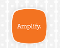

AnnouncementsAvisos
Welcome to 6th grade ELA! I'm so glad your student is in my class this year. In class, students will build an interactive notebook that becomes their learning portfolio throughout the year — it stays at school. Homework will be independent and rarely need your help: Amplify Solos for reading comprehension, weekly reading logs, Khan Academy for grammar practice, and handwriting practice sheets. Homework begins the second week of school. ¡Bienvenidos a Lengua y Literatura de 6.º grado! Me alegra mucho tener a su hijo/a en mi clase este año. En clase, los estudiantes construirán un cuaderno interactivo que se convertirá en su portafolio de aprendizaje durante todo el año — se queda en la escuela. La tarea será independiente y rara vez necesitará su ayuda: Amplify Solos para comprensión de lectura, registros de lectura semanales, Khan Academy para práctica de gramática y hojas de práctica de escritura a mano. La tarea comienza la segunda semana de clases.
Progress updates, behavior notes, and any questions all go through Bloomz — it's our main way of staying in touch this year. Class code: [add code]. Las actualizaciones de progreso, notas de comportamiento y cualquier pregunta pasan por Bloomz — es nuestra principal forma de comunicación este año. Código de clase: [agregar código].
Need this page in another language? Use the EN / ES toggle at the top right. ¿Necesita esta página en otro idioma? Use el botón EN / ES en la parte superior derecha.
This Week's HomeworkTareas de esta Semana
| DayDía | AssignmentTarea | DueFecha límite |
|---|---|---|
| Wednesday, Aug. 12Miércoles, 12 de agosto | No homework assignedNo se asignó tarea | — |
| Thursday, Aug. 13Jueves, 13 de agosto | No homework assignedNo se asignó tarea | — |
| Friday, Aug. 14Viernes, 14 de agosto | No homework assignedNo se asignó tarea | — |
Important Note: Students will use their homework folder to carry any practice/study sheets to and from home. Interactive notebooks will remain in class until the end of the semester. Nota importante: Los estudiantes usarán su carpeta de tareas para llevar hojas de práctica/estudio entre la casa y la escuela. Los cuadernos interactivos permanecerán en el salón de clases hasta el final del semestre.
ResourcesRecursos
-
CURRICULUMPLAN DE ESTUDIOS

Amplify ELA — found in your student's ClassLink on their laptop Amplify ELA — se encuentra en ClassLink de su estudiante en su computadora portátil - READINGLECTURA Amplify library — students can read or read along as they listen Biblioteca de Amplify — los estudiantes pueden leer o seguir la lectura mientras escuchan
- GRAMMARGRAMÁTICA Khan Academy — found in your student's ClassLink on their laptop Khan Academy — se encuentra en ClassLink de su estudiante en su computadora portátil
- COMMUNICATIONCOMUNICACIÓN Bloomz — student academic progress and/or concerns; behavioral concerns Bloomz — progreso académico del estudiante y/o inquietudes; inquietudes de comportamiento
- GRADESCALIFICACIONES Frontline — please make sure you have an email on file to receive grade reports for your student. Check your spam folder for emails from Frontline. Frontline — por favor asegúrese de tener un correo electrónico registrado para recibir los informes de calificaciones de su estudiante. Revise su carpeta de correo no deseado (spam) para los correos de Frontline.
- READING LOGREGISTRO DE LECTURA Must be signed by a parent/guardian each day Debe ser firmado por un padre/tutor cada día
- HANDWRITINGESCRITURA A MANO Practice sheets sent home weekly — printable at home if a copy is lost (see Printables tab above) Hojas de práctica enviadas a casa semanalmente — se pueden imprimir en casa si se pierde una copia (ver la pestaña de Imprimibles arriba)
Swap these placeholders for your real links once the site is live. Reemplace estos marcadores con sus enlaces reales cuando el sitio esté publicado.
PrintablesImprimibles
Printable practice sheets, including handwriting practice, will be posted here as they become available. Check back for updates. Las hojas de práctica imprimibles, incluida la práctica de escritura a mano, se publicarán aquí a medida que estén disponibles. Vuelva a consultar para ver actualizaciones.
SuppliesÚtiles Escolares
This list is a list of supplies students will need to begin the first semester of class. Some of these supplies, such as pencils, may need to be replenished throughout the school year. Families are responsible for the replenishment of supplies throughout the year. Esta es la lista de útiles que los estudiantes necesitarán para comenzar el primer semestre de clases. Algunos de estos útiles, como los lápices, pueden necesitar reponerse durante el año escolar. Las familias son responsables de reponer los útiles durante el año.
- Composition Notebooks (2)Cuadernos de composición (2)
- Glue Sticks (pack of 6)Barras de pegámento (paquete de 6)
- Scissors (1)Tijeras (1)
- College ruled loose leaf notebook paper (1 pack of 100 or more)Papel de cuaderno de hojas sueltas, rayado universitario (1 paquete de 100 o más)
- Colored pencils (1 pack of 12 or more)Lápices de colores (1 paquete de 12 o más)
- Pencil sharpener (1)Sacapuntas (1)
- Sticky notes (1 pack or more, any colors)Notas adhesivas (1 paquete o más, cualquier color)
- Erasers (pack of 2 or more)Borradores (paquete de 2 o más)
- Highlighters (pack of 4 or more, multi-colored)Marcadores resaltadores (paquete de 4 o más, multicolor)
- Dry erase markers (pack of 2, any color)Marcadores de pizarra blanca (paquete de 2, cualquier color)
- Pens (pack of 4 or more, any color)Bolígrafos (paquete de 4 o más, cualquier color)
- Pencils (pack of 12 or more)Lápices (paquete de 12 o más)
Important: Supplies are the responsibility of the student. If a student fails to bring supplies to class, I will communicate this to you through Bloomz. If a student cannot complete classwork due to not having supplies, the classwork will be graded at 0% until the student is able to complete it. If your student ever needs supplies, they may request them at the school office. Importante: Los útiles escolares son responsabilidad del estudiante. Si un estudiante no trae sus útiles a clase, me comunicaré con usted a través de Bloomz. Si un estudiante no puede completar el trabajo de clase por no tener los útiles necesarios, el trabajo se calificará con un 0% hasta que pueda completarlo. Si su estudiante necesita útiles en algún momento, puede solicitarlos en la oficina de la escuela.